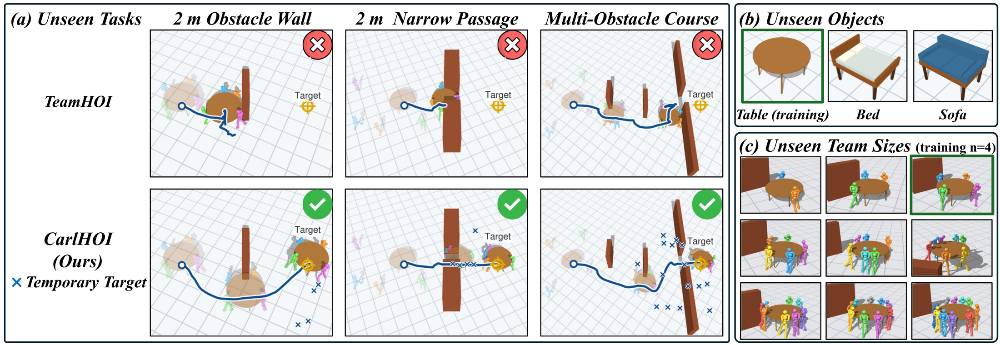
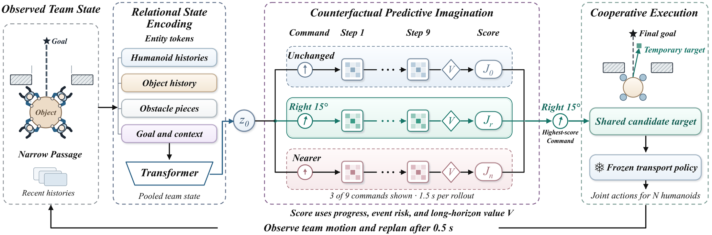
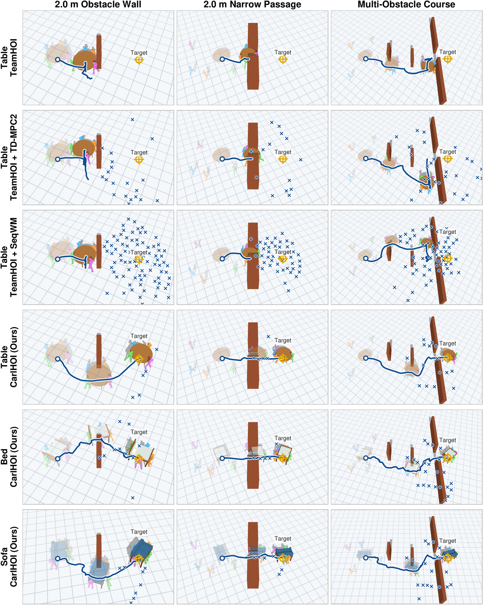
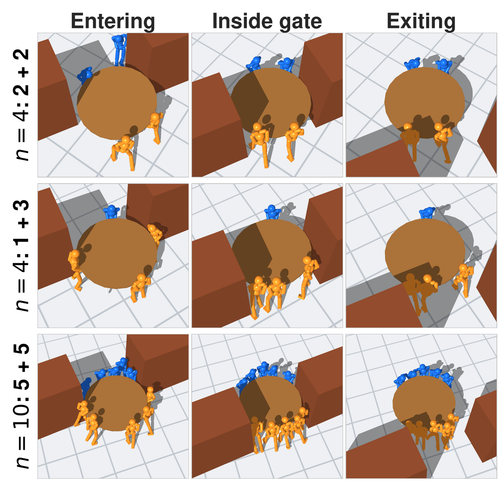
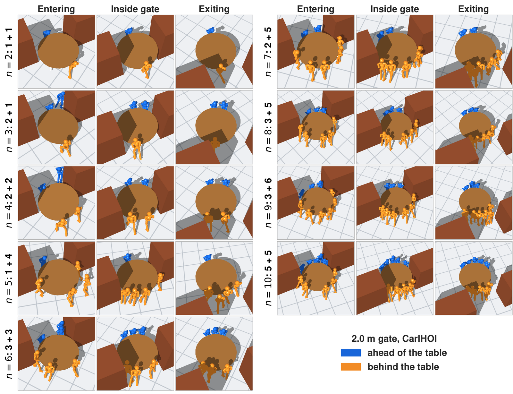
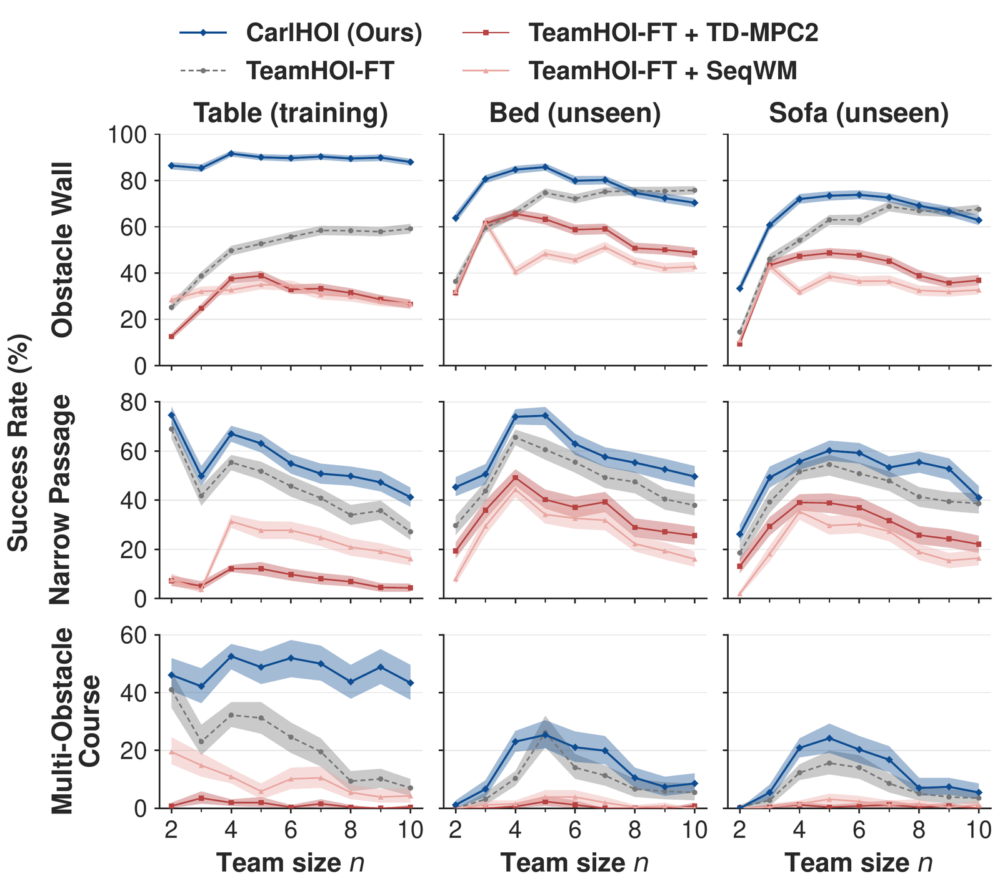
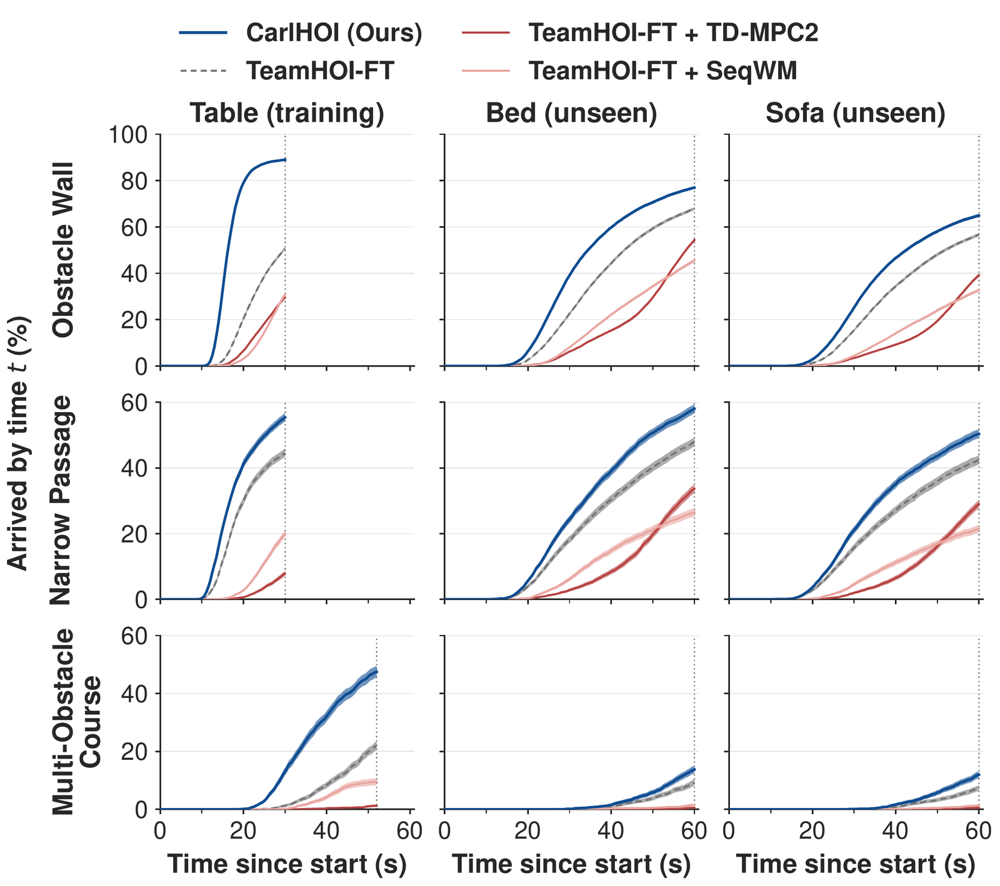
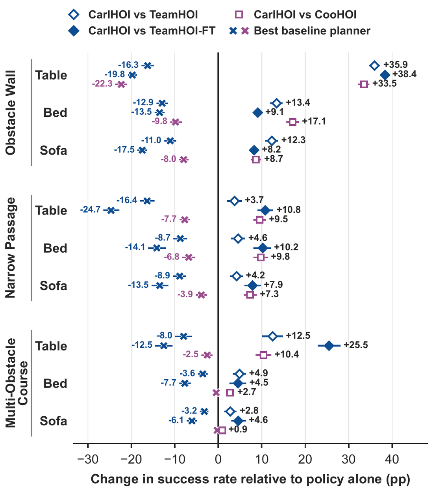

CarlHOI: Counterfactual Predictive Imagination for Generalizable Multi-Humanoid Object Interaction under Constrained Environments

Video
Abstract
Recent advances in physics-based humanoid control have enabled teams of varying sizes to coordinate their movements and cooperatively transport shared objects. However, adapting learned cooperative behaviors to unseen environmental constraints remains challenging, particularly when obstacles require coordinated detours and changes in team configuration. To address this challenge, we propose CarlHOI, a counterfactual predictive imagination framework built upon a counterfactual-anchored relational latent world model (CarlWM) for human-object interaction (HOI), enabling multi-humanoid teams to adapt to unseen environmental constraints without retraining their underlying cooperative control policies. CarlHOI explicitly represents the shared object, individual humanoids, and environmental obstacles as interacting entities. Trained offline using counterfactual simulator rollouts, the model imagines alternative collective futures under different shared waypoint commands, predicting how the coupled humanoid team and object would respond. By evaluating these imagined outcomes through predicted progress, failure, and contact risks, and long-horizon value estimates, CarlHOI selects adaptive guidance commands while preserving the pretrained cooperative controller. We introduce a benchmark comprising three challenging obstacle-constrained transport tasks to evaluate adaptation and generalization. Despite being trained exclusively with four humanoids, our world model generalizes without retraining to teams of two to ten humanoids, unseen obstacle geometries and placements, unseen objects, and novel combinations of environmental constraints. Extensive experiments demonstrate improved cooperative transport success over evaluated baselines across diverse configurations. These results highlight the potential of counterfactual predictive imagination to extend pretrained multi-humanoid cooperative skills beyond their original training conditions.
Method
CarlHOI never changes the transport policy's weights: it steers the team only through the policy's goal input. Every 0.5 s, CarlWM encodes the recent history of the object, each humanoid and each obstacle piece as separate entity tokens, imagines how the team would respond to nine candidate shared waypoints over 1.5 s, and scores each imagined future by predicted progress, failure and contact risks, and a learned long-horizon value. The best waypoint becomes a temporary target for the frozen policy.

Comparison with world-model planners
Four planners steer the same frozen policy (TeamHOI-FT, four humanoids, the table) on the same episode, from identical initial states: the policy alone, TD-MPC2, SeqWM, and CarlWM (ours). Crosses mark each planner's current temporary target(s); the blue line traces the table.

Generalization without retraining
CarlWM is trained once, with four humanoids, one policy (TeamHOI-FT), the table, and a narrow range of obstacle sizes. Every other team size, obstacle size, object and policy below is unseen.
Success rates averaged over team sizes 2–10 for the given obstacle (policy alone → with CarlWM).
Team reformation


Results
Success rate (%) carrying the table, averaged over team sizes 2–10 (equal weight per team size), with 256 paired episodes per obstacle and team size. W: Obstacle Wall (1.0–3.0 m spans); P: Narrow Passage (2.1 and 2.0 m gates); M: Multi-Obstacle Course (two 13 m layouts).
| Policy | Planner | W | P | M |
|---|---|---|---|---|
| TeamHOI | Policy alone | 44.4 | 29.9 | 15.3 |
| TD-MPC2 | 27.3 | 5.9 | 1.5 | |
| SeqWM | 28.1 | 13.5 | 7.3 | |
| CarlWM (Ours) | 80.3 | 33.6 | 27.8 | |
| TeamHOI-FT† | Policy alone | 50.6 | 44.6 | 22.0 |
| TD-MPC2 | 29.6 | 7.8 | 1.2 | |
| SeqWM | 30.9 | 19.9 | 9.5 | |
| CarlWM (Ours) | 89.0 | 55.4 | 47.5 | |
| CooHOI | Policy alone | 42.8 | 12.7 | 5.8 |
| TD-MPC2 | 20.4 | 2.2 | 0.4 | |
| SeqWM | 19.8 | 5.0 | 3.3 | |
| CarlWM (Ours) | 76.3 | 22.2 | 16.2 |
† Planners are trained only with four humanoids and TeamHOI-FT; TeamHOI and CooHOI are unseen policies.


